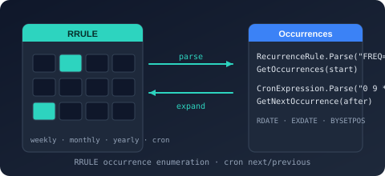

Bodu.Globalization.Recurrence Namespace
- Package

Purpose
Bodu.Globalization.Recurrence models recurring schedules in industry-standard textual grammars: RFC 5545 (iCalendar) recurrence rules, Vixie-style cron expressions, and instant-anchored intervals in the RFC 5545 duration grammar. Every surface parses, formats, and enumerates occurrences without any calendar-data dependency - the package depends only on Bodu.Core - and every answer is a pure function of the arguments: no API reads the wall clock or consults the machine time zone.
Reach for this library when you need to answer "when does this schedule fire next?", "when was the previous occurrence?" (the due-ness comparison), or "which instants does this rule produce inside this window?" for schedules expressed as RRULE text, composed rule sets with extra and exception dates, cron expressions, or fixed intervals anchored to an instant such as a last completed run.
Static documentation
- Introduction - the four schedule forms side by side, the common next / previous contract, purity, and the "which form" table.
- Core concepts - occurrence vs. due-ness, anchor /
DTSTART, inclusive boundaries,WKST, theBY*parts andBYSETPOS, cron field semantics and the search horizon, the duration grammar, offsets and daylight saving, value equality. - Getting started - install and a parse → next / previous → enumerate sample for each form, the builder, a set round trip, and defect-naming
TryParse. - Recurrence and scheduling guide - the due-ness recipe, calendar-aware filtering by composition, bounded searches, and conformance.
Key types
- RecurrenceRule - an immutable RFC 5545 recurrence rule (
RRULE): a base frequency refined by an interval, an optional bound (COUNTorUNTIL), and theBYrule parts, with parse/format round-tripping and occurrence enumeration relative to a start date. - RecurrenceRuleBuilder - fluent construction of a RecurrenceRule as an alternative to parsing its textual form.
- RecurrenceSet - a composed set of recurring instants: one or more rule streams anchored at a common start, merged with explicit recurrence dates (
RDATE) and with exception dates (EXDATE) removed. - CronExpression - a parsed Vixie-style cron expression with next/previous occurrence computation, under a CronFormat selecting the five- or six-field grammar.
- AnchoredInterval - a recurrence whose occurrences repeat at a fixed interval from a caller-supplied anchor instant ("every 4 hours after the last completed run"), with the RFC 5545 §3.3.6 duration grammar (
PT4H,P1DT2H30M) as its canonical text. - RecurrenceFrequency and WeekDayNum - the frequency scale (secondly through yearly) and the ordinal-qualified weekday (
BYDAY) building block.
Samples
Five runnable sample projects live under samples/Globalization.Recurrence/ - one per schedule form
(RecurrenceRules, CronExpressions, AnchoredIntervals, RecurrenceSets) plus SchedulingHost,
which puts all four behind a single adapter and shows configuration validation and missed-run
catch-up. See the samples catalogue.
Notes
- Preview. The package is published for early evaluation; the public API surface is still taking shape and may change between releases without a major-version bump.
- An independent sibling of the calendar engine.
Bodu.Globalization.Calendarand this package share no dependency in either direction: the calendar's<Recurrence>sources (<DailyInterval>,<Weekly>,<MonthlyDay>,<MonthlyWeekday>) are its ownIDateRecurrenceStrategytypes, while this package is the standalone, data-free scheduling grammar for RFC 5545 rules, cron, and anchored intervals. Calendar-aware filtering of a recurrence stream is composition from outside - see the recurrence guide - and the package matrix shows how the globalization family fits together.
Classes
- AnchoredInterval
Represents a recurrence whose occurrences repeat at a fixed Interval from a caller-supplied anchor instant, rather than being aligned to the calendar.
- CronExpression
Represents a parsed Vixie-style cron expression and computes the occurrences that satisfy it.
- RecurrenceRule
Represents an immutable RFC 5545 recurrence rule (
RRULE): a base Frequency refined by an interval, an optional bound (Count or Until), and theBYrule parts, from which the set of recurring instants relative to a start date is derived.
- RecurrenceRuleBuilder
Builds a RecurrenceRule fluently, as an alternative to parsing its textual form.
- RecurrenceSet
Represents a composed set of recurring instants: one or more RecurrenceRule streams anchored at a common start, merged with explicit recurrence dates (
RDATE) and with exception dates (EXDATE) removed.
Structs
- WeekDayNum
Represents a single entry in an RFC 5545
BYDAYrule part: a day of the week with an optional ordinal that selects a specific occurrence of that weekday within the frequency period.
Enums
- CronFormat
Identifies the field layout of a CronExpression.
- RecurrenceFrequency
Identifies the base period at which a RecurrenceRule repeats, corresponding to the RFC 5545
FREQrule part.